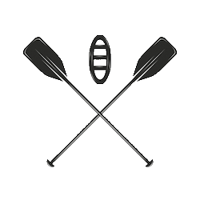

We want to bring your adventure dreams on the water to life! We provide exciting packages to fit anybody's need. We offer single day rafting experiences, fishing experiences and a two day, overnight excursion that includes camping and fishing. All of your gear and food are provided. We want to help you create those memories that you'll be talking about for the rest of your life.

Foaming Adventures
History
As a boy Bob Curtis dreamed of running free in the fresh outdoors after school was out. Camping and fishing along the banks of the roaring Evergreen River in Colorado were among his favorite things to do and then he went white water rafting. After that he was hooked. Weekend and summer trips would only curb his appetite for the wild.
In 1987 he decided to quit his accounting job and build a business doing what he loved the most. Foaming Adventures became a huge success as he brought his dream to life. Today Foaming Adventures provides chartered trips that will make you forget all about the office. With amazing views of Ridge Canyon, wildlife, and rapid trips for everyone, this is the place to come.